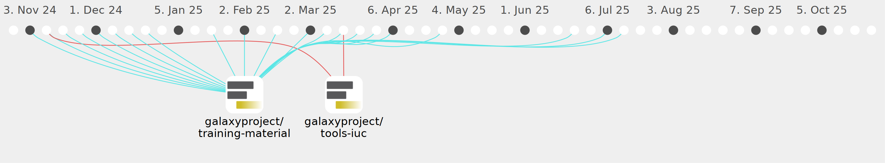

nomadscientist

Commits all-time: 1423
Commits last year: 280

(278)
- 92b608f
- 90aad77
- 07cb402
- 687fef2
- 9fcda0f
- 7783a9d
- 77e9765
- 4c39274
- 1690bb1
- b582a09
- 4bba452
- 72a6710
- 1b70a0b
- aebd57a
- c5343a9
- 72c504c
- 4471b9f
- 90e92d0
- 1c774ac
- de1a1fb
- d70259b
- 5f896f7
- 661cae2
- 2043016
- 77152f4
- fe82617
- ba094d9
- 3a037d5
- 2a062fe
- dd442b5
- c67c7ff
- cb4ab10
- 40aa32c
- 186c77a
- 9824b09
- 05d26e5
- 80a6b5e
- 0482657
- 91a5fd1
- b6e8876
- dac784a
- cea90ef
- e8689ce
- 0956044
- 478c67b
- 63ed91d
- 9ffea2a
- 01a9a49
- b49fd31
- 5d624e3
- f72f02f
- 9db7cd4
- 0dbe8e3
- da912f3
- bf6a327
- af382f3
- 89de930
- 17bdbd1
- 9399ebe
- 1ba2dfc
- f78e570
- 0b486ea
- eee463a
- b341fc2
- 3d8c73e
- e9e2986
- 6bb680f
- e265a9d
- 8a743c2
- 63207f9
- 517fca5
- 6cd88f5
- 9b2ddfd
- 6a68af7
- 0548eb2
- 63afb27
- 601ff4b
- 7d57900
- 0fe58d0
- 82e4612
- 5cf8f99
- ae804e1
- 8d95a33
- fd4bb23
- 4121f0c
- 95777bb
- c85fab8
- 78b12c0
- 5559c46
- bc7cae6
- d2e7b57
- cb4cf93
- 859e245
- bede967
- df9a722
- 026058c
- 1996db5
- d48c057
- 710b197
- 2129d40
- 50c66ef
- 27ed080
- 2df8810
- a9c060b
- d04036b
- 0eb9899
- 0da53df
- d0157b3
- 3f23ec6
- 999a4e3
- f640ee2
- 5cd2a40
- 983d33d
- 1b31942
- 42d9a18
- 5020b10
- 37e2f95
- 311d93f
- d432deb
- 5fe44e6
- 6c12c04
- 36dd0c9
- 7957551
- fd7be22
- 86e606b
- d687b9e
- c8f75f0
- 34b14fe
- d93183e
- ccafd30
- eadeeb2
- 61a5349
- f243f77
- d32c08a
- 18527bb
- 2b449c9
- a686379
- 14a6018
- 08f0234
- 05e2681
- 4ca32eb
- 178e9ec
- d152031
- 67d207a
- bbb7884
- 6d4cd80
- f4d0ba4
- dd9086a
- 8cf7372
- 0e1a316
- cf5e90f
- 05f298b
- 6e7ded0
- 11a83bf
- afd1b34
- d549975
- dc46906
- 534945f
- 0b68c24
- 17e87de
- 772ba33
- 7630289
- 3a6425d
- c85a738
- cd139b3
- 7206042
- 5c5e34d
- 8463f51
- dd2851b
- 08257df
- 0d82c20
- 49c2883
- f24d230
- 88e03f7
- 1e816b2
- cd3195b
- 3823838
- 4705210
- 313fb3e
- 851edfd
- 9496446
- 836a8af
- f1953ba
- 9f93214
- 4ae331b
- ccd6ae8
- d1e8d42
- 7ee80e4
- 97a6121
- e684f88
- 59a567d
- 5bf2bfd
- 27a7451
- 770bb68
- 72f36c7
- f10080b
- 310d417
- 6ae3b8b
- 576ae7b
- b391dca
- 7b4642c
- 7b120d9
- 696251e
- 1ca0bf8
- dcb55f6
- faa7d65
- 876e7c2
- be5edac
- ee4e2ac
- 7827090
- 24294e5
- 128b60c
- 449cf24
- 7794a5c
- 803b7a4
- 81ff8e7
- 5c33711
- 1b26fe3
- 3f73187
- 3c21926
- ad26fbf
- 84a5fed
- d30d360
- f0081be
- 1fcd904
- 5c7c84a
- ab0050a
- 69fd813
- 878db4c
- 5fd8573
- 67259dd
- d58c57e
- facb818
- abb74b6
- f72da1d
- 3b014b5
- ea903a3
- 5f17a34
- bffecea
- b5f77e8
- 6a784f7
- 3cfb4f8
- 6bc6570
- 4df0435
- ba1da15
- 14858c3
- fa312c5
- c46ab06
- fcf606b
- acbebb3
- 89e7d3c
- a12b990
- 569ff02
- b3c45ab
- e471ab9
- b163111
- 5bdd2b2
- 34a7c78
- 3719539
- 217007c
- d320cd4
- 25e2c51
- d4dc4f8
- 6a382b0
- 2c9e112
- 3eaa1ad
- 7120a7e
- cc44503
- 86dcbe0
- d00b0df
- 6814d78
- faabb91
- dcb1235
- a6771f8
- 40ee6bb
- 833ff25
- 33c214b
- d71b266
(2)